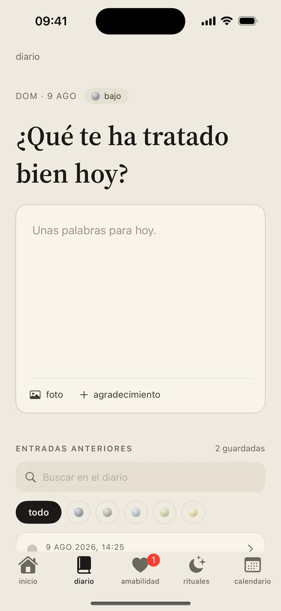
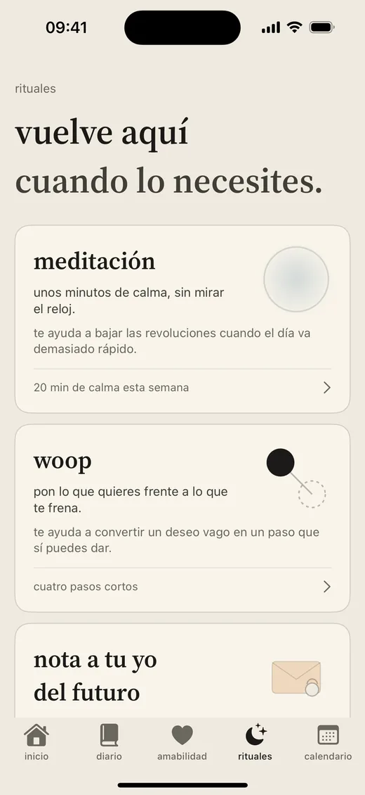
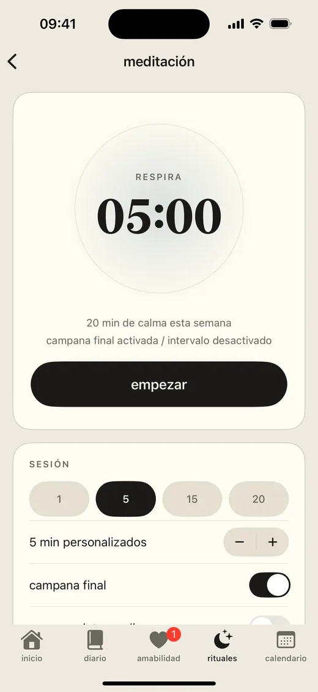
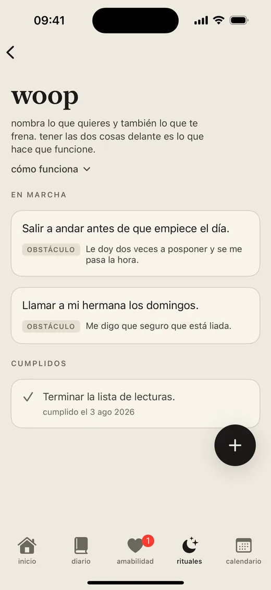
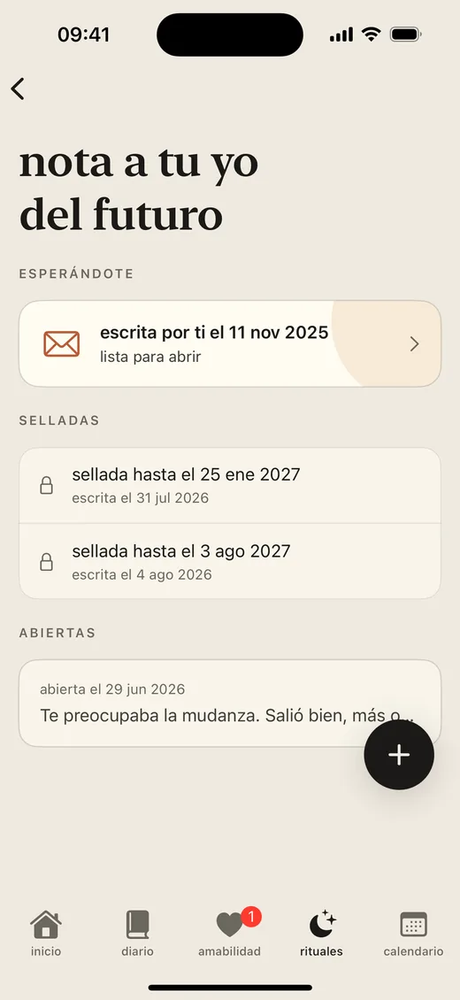

funciones
Tu día de calma en una sola app.
Registro de ánimo, diario, gratitud y un puñado de rituales diarios, con tus datos a salvo en tu dispositivo: un lugar tranquilo para tu bienestar diario, con una función estrella construida en torno a la amabilidad.
No sustituye al apoyo de salud mental. Luvia no es terapia, atención médica, apoyo en crisis ni atención de emergencia.
míralo
Treinta segundos de Luvia.
Un recorrido rápido antes de los detalles de abajo.
registro de ánimo
Pon nombre al ánimo. Observa el patrón.
Elige un ánimo, añade etiquetas sencillas y deja que el gráfico de la semana muestre los pequeños cambios con el tiempo. No se trata de puntuarte, sino de mirar tu clima interior con un poco más de amabilidad.
Un calendario mensual reúne ánimos, notas, gratitud, sesiones y Kind messages en un resumen tranquilo para que los patrones se vean sin presión.


diario y gratitud
Escribe esa pequeña verdad.
Añade unas palabras sinceras sobre el día y guarda una nota de gratitud cuando algo merezca la pena. La página se guarda sola mientras escribes, así que no se pierde nada al soltar el móvil. Sin público, sin rachas, sin indicaciones que te digan cómo sentirte.
Adjunta una foto cuando una imagen lo diga todo, toca la pregunta para cambiarla y vuelve atrás filtrando las entradas por cómo te sentías. Todo se queda en privado en tu dispositivo.
rituales
Un sitio al que volver cuando lo necesites.
Rituales reúne en una sola pestaña las prácticas que eliges hacer: el temporizador de meditación, WOOP y las notas a tu yo del futuro.


meditación
Unos minutos, contados por ti.
Elige la duración de la sesión y deja que el temporizador sencillo haga el resto. Unas campanas opcionales marcan el inicio y el final para que puedas cerrar los ojos del todo. Sin voz guiada, sin puntuación: solo un rato de calma cuando lo necesites.
woop
Convierte un deseo en un paso de verdad.
WOOP viene de wish, outcome, obstacle, plan: deseo, resultado, obstáculo y plan. Nombra algo que quieras para las próximas semanas. Imagina con detalle lo mejor que puede salir de ahí. Después mira de frente el obstáculo que llevas dentro, el sincero y no el que queda bien. Y decide el paso ahora, mientras es fácil: si aparece ese obstáculo, entonces haré esto.
Tener el deseo y el obstáculo presentes a la vez se llama contraste mental y lleva décadas estudiándose. Soñar por sí solo rara vez mueve nada: nombrar lo que se cruza en el camino es lo que hace que funcione. La investigación detrás de WOOP.


nota a tu yo del futuro
Escribe hoy. Léelo más adelante.
Déjate unas líneas y elige el día en que vuelven. La nota queda sellada hasta entonces y llega esa mañana. Va bien antes de algo difícil, y sienta muy bien recibirla de una versión de ti que aún no sabía cómo iba a salir.
Las notas viven en tu dispositivo y se incluyen en tus copias de seguridad, todavía selladas.
privacidad de datos
Tus datos se quedan en tu dispositivo.
Guardado en local
Las entradas del diario, los registros de ánimo, las notas de gratitud, las sesiones de meditación, los woops y las notas a tu yo del futuro viven en tu dispositivo.
Descarga tus datos
Exporta todo lo que has escrito cuando quieras. Tus reflexiones son tuyas y puedes llevártelas en cualquier momento.
Sin anuncios ni rastreo
Luvia no muestra anuncios ni te rastrea en otras apps o sitios web. Tus reflexiones nunca se usan para publicidad.
la función estrella
Kind messages, sin nombres.
Envía algo que llevas dentro o acompaña la nota de otra persona cuando lo necesites. Anónimo, moderado y pensado para el cuidado, no para la interacción constante.
aviso importante
Luvia no es atención médica ni apoyo en crisis.
Si crees que podrías hacerte daño o hacérselo a otra persona, contacta de inmediato con los servicios de emergencia locales o con alguien de confianza. Luvia está pensada para la reflexión y el apoyo diario y amable, no para el diagnóstico, el tratamiento ni la ayuda de emergencia.